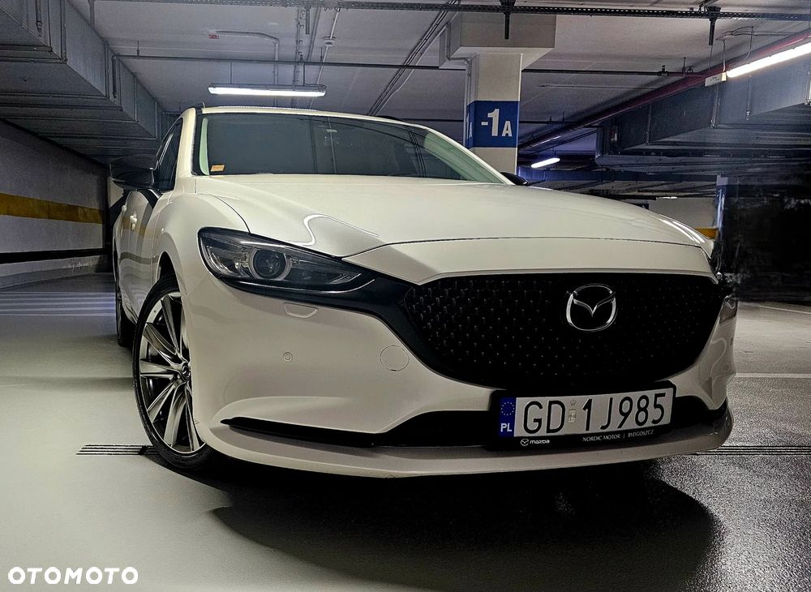
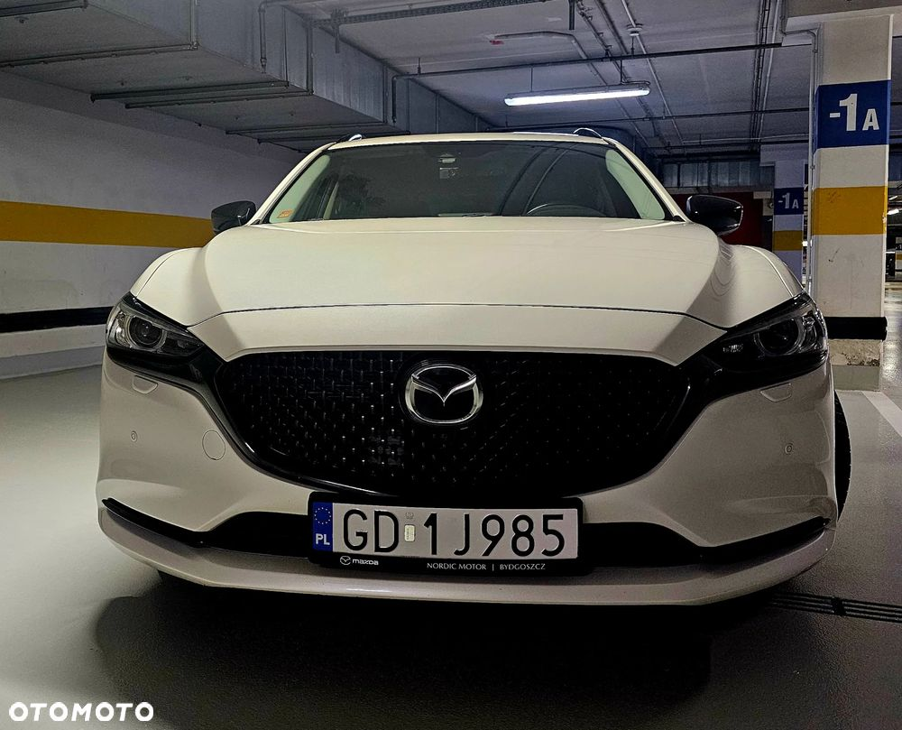
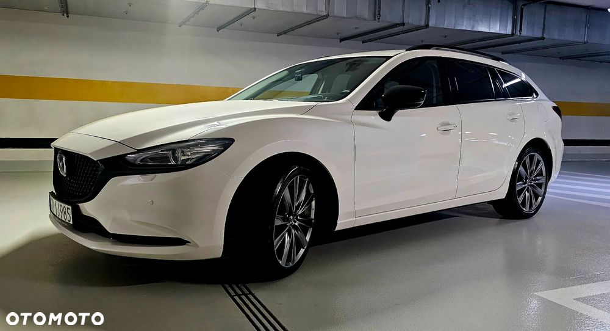
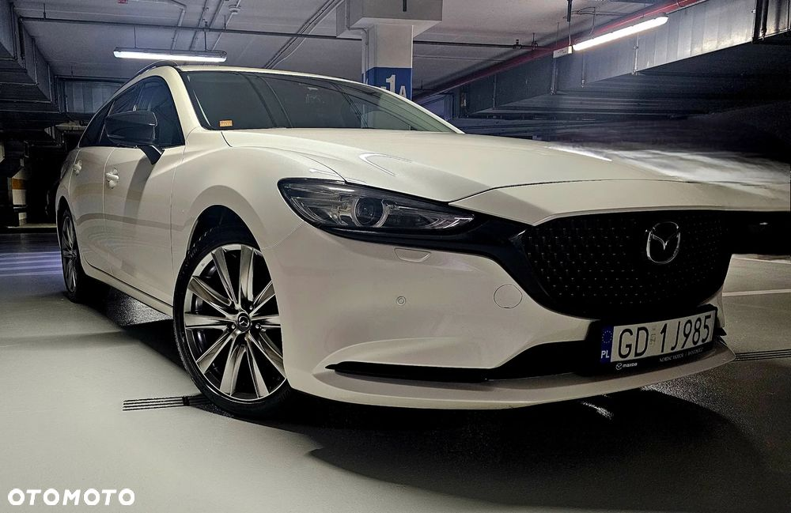
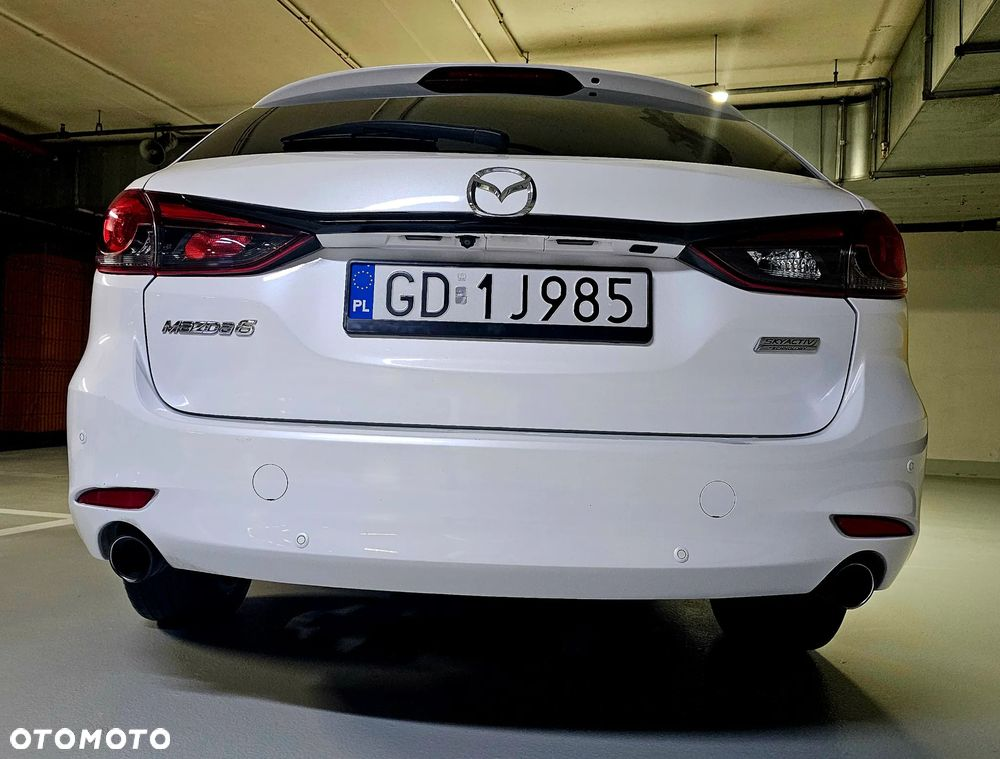
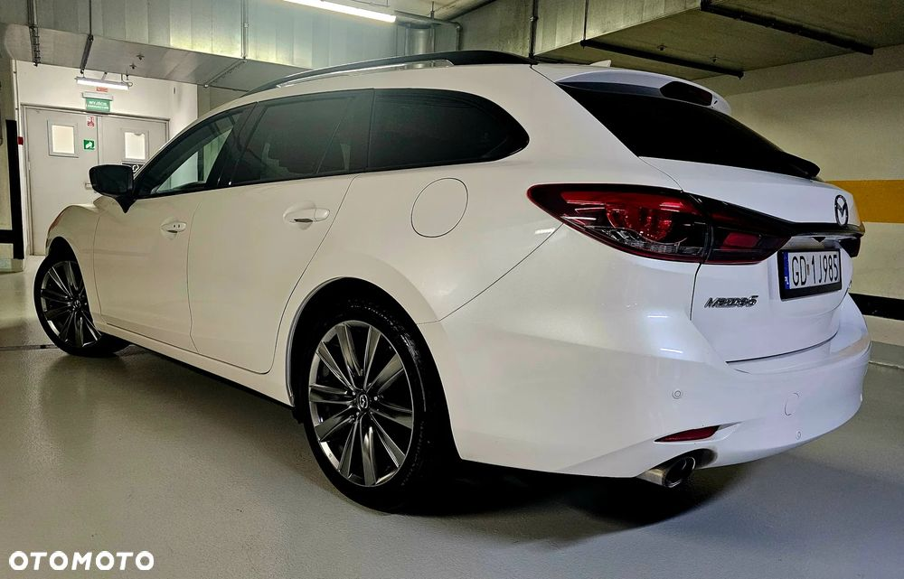
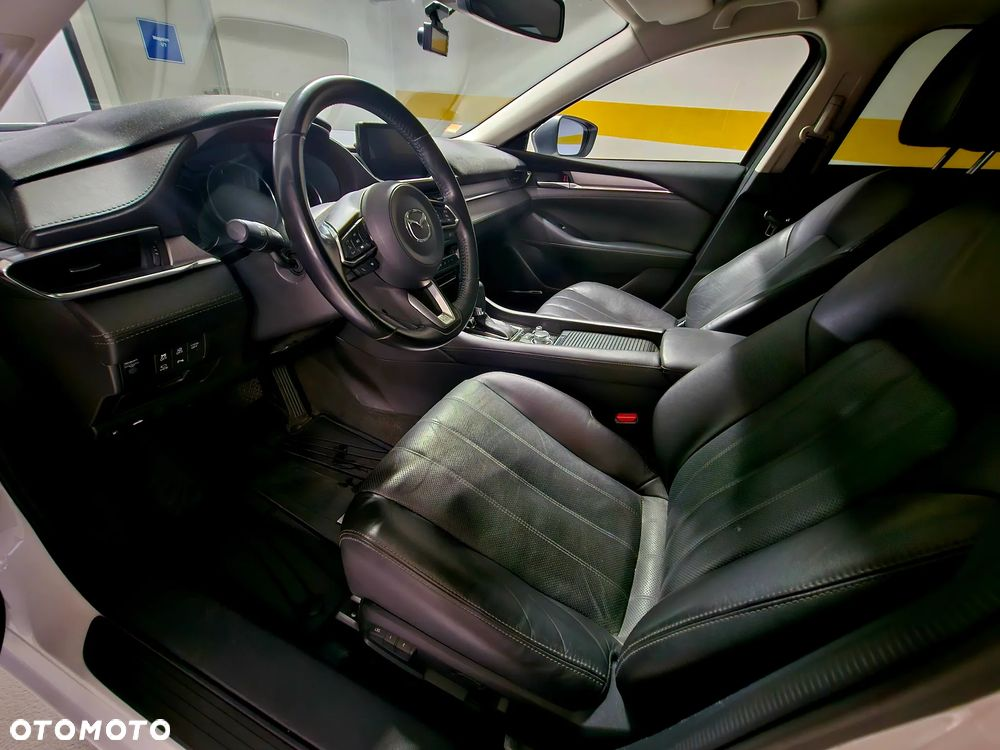
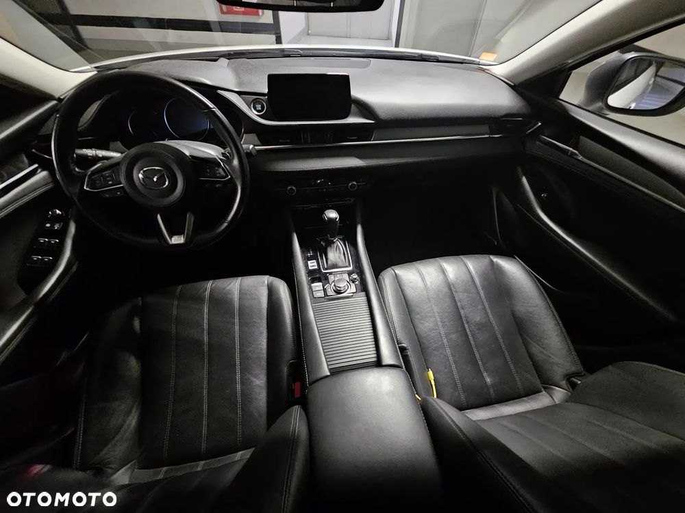
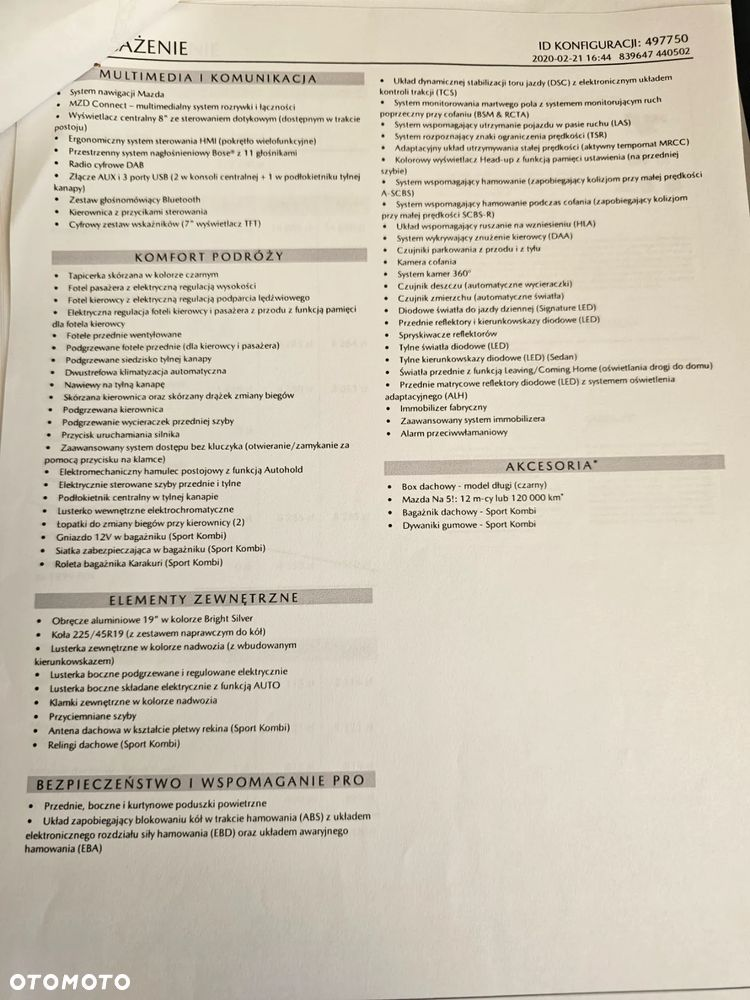

Witam,
Gratka dla fanów japońskiej motoryzacji!
Biały kruk wśród japońskich samochodów z wolnossącym silnikiem, który daje dużo frajdy z jazdy i rozpędza sie do 100km/h w 7,8 sekundy!
Bezwypadkowy egzemplarz kultowej i unikatowej juz mazdy 6. Kupiony w polskim salonie. Jest to najbogatsza wersja tego modelu i z najmocniejszym i najlepszym silnikiem 2,5 litra 194 KM.
Wszystkie elementy blacharsko-lakiernicze są w oryginalnym stanie.
Przebieg to zaledwie 82 000 km.
Auto mimo roku produkcji 2019, pierwszej rejestracji 2019 to wyjechało z salonu dopiero w 2020 roku bo jego rejestracja nastąpiła dopiero pod koniec 2019 roku.
Tam więc można śmiało powiedzieć, ze jest to rocznik 2020.
Wszystko jest w pełni sprawne.
Auto nie wymaga nakładu finansowego.
Dorzucam jeszcze komplet alufelg 17" z oponami zimowymi. Obecnie letnie alufelgi 19".
Polisa OC i AC ważna do stycznia 2016
Wyposażenie:
- wyświetlacz 8" (dotykowy w trakcie postoju)
- nagłośnienie BOSE ( 11 głośników )
- skórzana tapicerka
- elektryczna regulacja przednich foteli
- przednie fotele wentylowane i podgrzewane
- podrzewana tylna kanapa
- dwustrefowa klimatyzacja
- podgrzewana kierownica
- podgrzewane wycieraczki
- łopatki do zmiany biegów
- tempomat
- wyświetlacz head - up na przedniej szybie
- kamera 360 °
- kamera cofania
- diodowe światła (LED)
- przednie matrycowe reflektory diodowe (LED) z systemem adaptacyjnym
- android auto
i wiele innych.
Zapraszam do oględzin i jazdy próbnej
